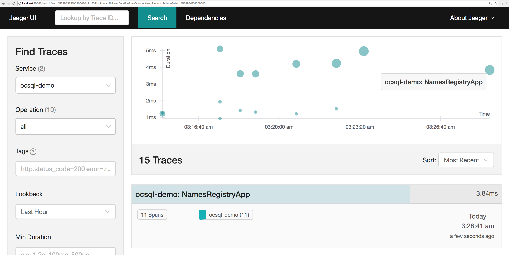
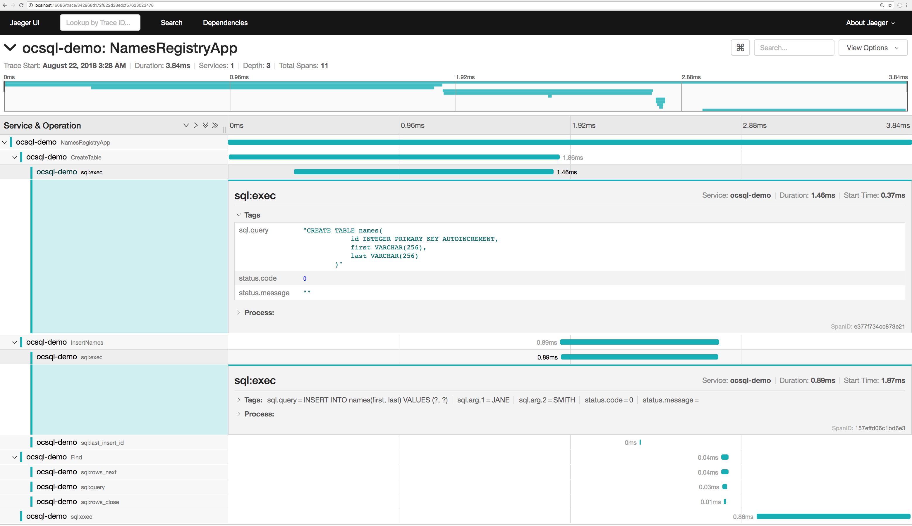

We have a Go "database/sql" package/wrapper that is trace instrumented with OpenCensus!
By the end of this tutorial, we will be able to achieve the following:
To install the "database/sql" plugin, please run:
go get -u -v contrib.go.opencensus.io/integrations/ocsql
We will first create a go-gettable directory and a file main.go, like so:
mkdir -p ocsql-e2e && cd ocsql-e2e
touch main.go
The following code gives a simple initialization of a database/sql instance in Go.
package main
import (
"database/sql"
"log"
)
func main() {
var ordinaryDriverName string // For example "mysql", "sqlite3" etc.
db, err := sql.Open(driverName, "resource.db")
if err != nil {
log.Fatalf("Failed to open the SQL database: %v", err)
}
defer db.Close()
}
We can use the OpenCensus trace-instrumented SQL driver wrapper in one of these two ways:
This mimicks the idiomatic recommendation to use the "database/sql" package in Go where we pass an implicitly registered driver to sql.Open which returns a *sql.DB handle
package main
import (
"database/sql"
"log"
"contrib.go.opencensus.io/integrations/ocsql"
)
func main() {
var ordinaryDriverName string // For example "mysql", "sqlite3" etc.
// First step is to register the driver and
// then reuse that driver name while invoking sql.Open
driverName, err := ocsql.Register(ordinaryDriverName, ocsql.WithAllTraceOptions())
if err != nil {
log.Fatalf("Failed to register the ocsql driver: %v", err)
}
db, err := sql.Open(driverName, "resource.db")
if err != nil {
log.Fatalf("Failed to open the SQL database: %v", err)
}
defer db.Close()
}
This option is useful if you'd like to be more explicit and if your database package exports its driver implementation.
package main
import "contrib.go.opencensus.io/integrations/ocsql"
func main() {
db := ocsql.Wrap(&theDBObjectInstance{}, ocsql.WithAllTraceOptions())
_ = db
}
To enable observability with OpenCensus, we need to hook up our favorite Go exporter as per the Go exporters guides.
This can be achieved like so (with Jaeger in this case):
import (
"go.opencensus.io/exporter/jaeger"
"go.opencensus.io/trace"
)
func enableOpenCensusTracingAndExporting() error {
// For demo purposes, we'll always trace
trace.ApplyConfig(trace.Config{DefaultSampler: trace.AlwaysSample()})
je, err := jaeger.NewExporter(jaeger.Options{
AgentEndpoint: "localhost:6831",
Endpoint: "http://localhost:14268",
ServiceName: "ocsql-demo",
})
if err == nil {
// On success, register it as a trace exporter
trace.RegisterExporter(je)
}
return err
}
And now to examine the exported traces, let's make a simple name registry app. For simplicitly, we use a sqlite3 database.
Place the following code in main.go. Save and close the file.
package main
import (
"context"
"database/sql"
"log"
"time"
"contrib.go.opencensus.io/integrations/ocsql"
"go.opencensus.io/exporter/jaeger"
"go.opencensus.io/trace"
_ "github.com/mattn/go-sqlite3"
)
func main() {
if err := enableOpenCensusTracingAndExporting(); err != nil {
log.Fatalf("Failed to enable OpenCensus tracing and exporting: %v", err)
}
driverName, err := ocsql.Register("sqlite3", ocsql.WithAllTraceOptions())
if err != nil {
log.Fatalf("Failed to register the ocsql driver: %v", err)
}
db, err := sql.Open(driverName, "resource.db")
if err != nil {
log.Fatalf("Failed to open the SQL database: %v", err)
}
defer func() {
db.Close()
// Wait to 4 seconds so that the traces can be exported
waitTime := 4 * time.Second
log.Printf("Waiting for %s seconds to ensure all traces are exported before exiting", waitTime)
<-time.After(waitTime)
}()
ctx, span := trace.StartSpan(context.Background(), "NamesRegistryApp")
defer span.End()
cCtx, cSpan := trace.StartSpan(ctx, "CreateTable")
_, err = db.ExecContext(cCtx, `CREATE TABLE names(
id INTEGER PRIMARY KEY AUTOINCREMENT,
first VARCHAR(256),
last VARCHAR(256)
)`)
cSpan.End()
if err != nil {
span.SetStatus(trace.Status{Code: trace.StatusCodeInternal, Message: err.Error()})
log.Fatalf("Failed to create table: %v", err)
}
defer func() {
// And for the cleanup
_, err = db.ExecContext(ctx, `DROP TABLE names`)
if err != nil {
log.Fatalf("Failed to delete the row: %v", err)
}
}()
iCtx, iSpan := trace.StartSpan(ctx, "InsertNames")
rs, err := db.ExecContext(iCtx, `INSERT INTO names(first, last) VALUES (?, ?)`, "JANE", "SMITH")
iSpan.End()
if err != nil {
log.Fatalf("Failed to insert values into tables: %v", err)
}
id, err := rs.LastInsertId()
if err != nil {
log.Fatalf("Failed to retrieve lastInserted ID: %v", err)
}
fCtx, fSpan := trace.StartSpan(ctx, "Find")
row := db.QueryRowContext(fCtx, `SELECT * from names where id=?`, id)
fSpan.End()
type name struct {
Id int
First, Last string
}
n1 := new(name)
if err := row.Scan(&n1.Id, &n1.First, &n1.Last); err != nil {
log.Fatalf("Failed to fetch row: %v", err)
}
log.Printf("Got back: %+v\n", n1)
}
func enableOpenCensusTracingAndExporting() error {
// For demo purposes, we'll always trace
trace.ApplyConfig(trace.Config{DefaultSampler: trace.AlwaysSample()})
je, err := jaeger.NewExporter(jaeger.Options{
AgentEndpoint: "localhost:6831",
Endpoint: "http://localhost:14268",
ServiceName: "ocsql-demo",
})
if err == nil {
// On success, register it as a trace exporter
trace.RegisterExporter(je)
}
return err
}
With the code above properly placed in main.go, we can now run:
go run main.go
On visiting http://localhost:16686/ we can see something similar to below:

On clicking to get details about the most recent trace:
